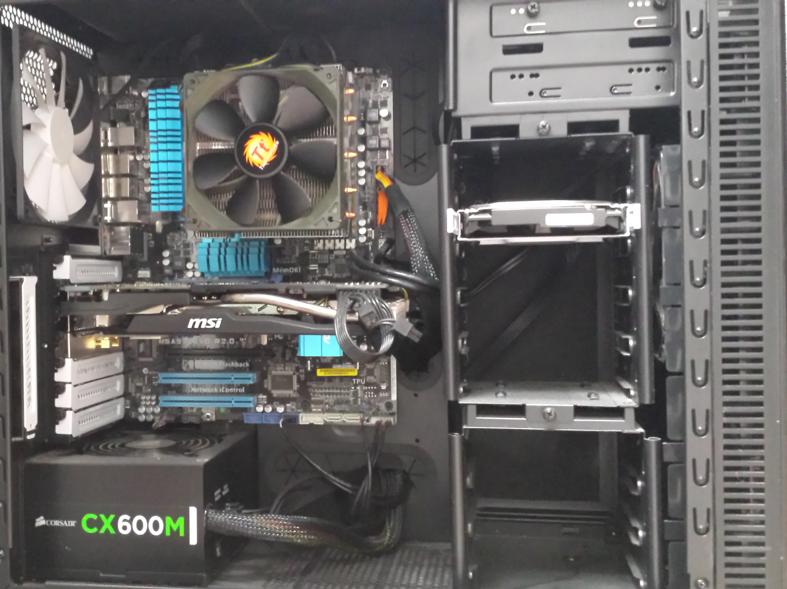

IT-autobiography
GIP-taak 05
Introduction
I’m the number one knowledge book of games. My nickname is as you can guess ‘gaming bible’. I’m 17 years old. I’m a student of the Immaculata institute because there I can study informatics and learn more about computers.
My first experience with IT was with the computer at home. I played the best game I ever played then. The game was called ‘pinball’. At that time I was 7 years old I think. I thought it was fantastic because you had a screen and you could move something on it. It was just an amazing experience. There was actually nothing that roused my interest it was just that we had a pc and I wanted to do something on it. My mom said I could play on it for about30 minutes so I enjoyed it. I mostly visited the site ‘funnygames’ on the internet. But I just mostly didn’t go on the internet and just played pinball.
At the moment IT actually means a lot because almost everything in our lives has informatics in it. But if you asking me 7 years ago I would’ve said almost ‘nothing’. That is because the IT world is growing really fast. In a normal day now I spend like 2 hours on the computer, mostly watching series and listening to music. Sometimes I game but my parents forbid it on schooldays. In gaming I hav not achieved a lot but I have already assembled 5 computers and I have made 2 networks. That’s all. I just think it’s fantastic if you spend 3 hours on building the pc and then you see that it works. That’s just an amazing feeling. It’s also really nice to see the person you made the pc for happy with his pc. I actually don’t see myself as an expert. That’s because experts have been searching everything around the subject and work on it every day. I’m just someone who knows a lot about it but nothing more. And I think I can still develop in knowing more about building pcs and pc components. Because if you are interested in something, you want to know everything about it. And I’m surely interested in pcs.
I really would like to have a shop of pc components where I also build computers. Just because I’m interested in that. And they always say you become happier when you like to do your job. It’s actually kind of my dream job right now. There are also not a lot of shops in Belgium like this so that’s really good. And I don’t really have other aspirations. Maybe later this year I’m going to but at the moment I don’t.

I do think my pc and IT have become an important part of my life. I don’t think I can’t live without them. But I do think I spend a lot of time on a pc. Not only in school but also in my spare time.

Share this post
Twitter
Google+
Facebook
Reddit
LinkedIn
StumbleUpon
Email